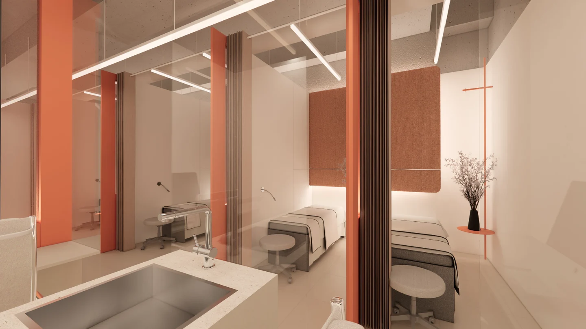
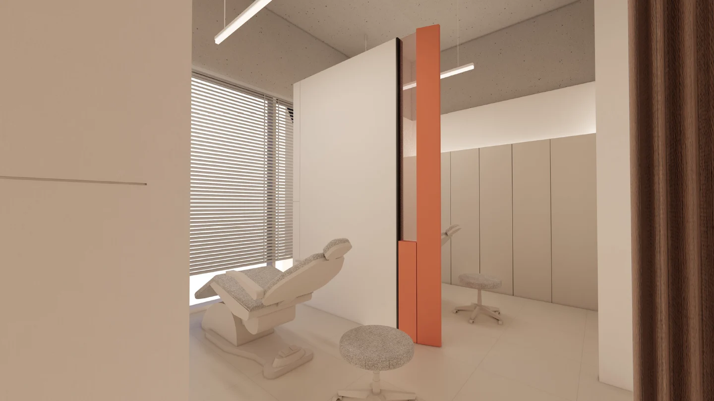

01 / MENOPAUSAL SYMPTOMS
갱년기 장애
증상의 개선
갱년기 장애 증상 개선을 목적으로 사용하는 태반 유래 제품이 있습니다. 증상의 종류와 생활에 미치는 영향, 기존 치료 이력을 함께 확인합니다.
증상 · 병력 · 현재 치료Beauty Blossom
PLACENTA INJECTION
나를 돌보는 시간,
내 몸의 리듬에 맞게.
지금의 컨디션을 세심하게 살피고,
나에게 필요한 진료를 함께 찾습니다.
Care starts with you.
태반주사는 사람의 태반에서 유래한 성분을 정제·가공한 의약품을 사용하는 주사입니다. 같은 이름으로 불려도 제품의 구성과 사용 목적은 다를 수 있습니다.
WHAT IS PLACENTA INJECTION?
지금 불편한 증상은 무엇인지,
어떤 제품을 어떤 목적으로 사용하는지.
충분히 이해한 뒤 시작하는 진료.
Understand your care.
태반 유래 의약품에는 아래와 같은 목적으로 허가된 제품이 있습니다. 한 제품이 모든 효능을 갖는 것은 아니며, 실제 사용하는 제품과 진료 목적에 맞춰 상담합니다.
01 / MENOPAUSAL SYMPTOMS
갱년기 장애 증상 개선을 목적으로 사용하는 태반 유래 제품이 있습니다. 증상의 종류와 생활에 미치는 영향, 기존 치료 이력을 함께 확인합니다.
증상 · 병력 · 현재 치료02 / LIVER FUNCTION
만성 간질환의 간기능 개선을 목적으로 허가된 태반 유래 제품이 있습니다. 진단과 건강 상태를 검토한 뒤 필요한 진료를 결정합니다.
진단 · 건강 상태 · 복용약피로, 수면의 변화, 피부 고민은 여러 원인에서 생길 수 있습니다. 증상만으로 태반주사의 필요성을 판단하지 않고, 원인을 살펴 적합한 진료를 안내합니다.
Your rhythm matters.
언제부터, 얼마나 자주, 어떤 상황에서 불편한지 알려주시면 상담에 도움이 됩니다. 작은 변화도 편하게 말씀해 주세요.
충분히 쉬어도 계속되는 피로, 수면과 일상 패턴의 변화를 살핍니다.
열감·발한 등 불편한 증상과 현재 진료·치료 내용을 함께 확인합니다.
진단받은 질환, 복용 중인 약과 최근 주사 치료를 알려주세요.
Step by step.
상담에서 제품과 투여 방법을 설명하고, 진행 후의 반응까지 확인합니다. 시간과 주기·횟수는 진료 내용에 따라 달라집니다.
증상·병력·복용약과 알레르기, 과거 주사 후 반응을 확인합니다.
사용 제품의 목적, 투여 방법, 예상 비용과 주의사항을 안내합니다.
제품의 허가사항과 진료 계획에 맞춰 투여합니다.
불편감과 반응을 살펴 다음 방문 여부와 간격을 결정합니다.
횟수를 먼저 정하기보다 사용 제품과 진료 목적, 투여 후 경과를 기준으로 계획합니다. 이전에 받았던 주사가 있다면 제품명과 날짜를 알려주세요.
BEFORE CARE
AFTER CARE
숨이 차거나 얼굴·목이 붓는 등 심한 과민반응이 의심되면 즉시 응급 진료를 받으세요.
Your questions.
효능과 주기, 비용과 주의사항까지.
궁금했던 내용을 확인하세요.
사람의 태반에서 유래한 성분을 정제·가공한 의약품을 사용하는 주사입니다. 제품마다 성분 구성과 허가된 효능, 투여 방법이 다르므로 진료 후 적합성을 확인합니다.
갱년기 장애 증상의 개선 또는 만성 간질환에서의 간기능 개선을 목적으로 허가된 제품이 있습니다. 두 효능이 모든 태반주사에 함께 적용되는 것은 아닙니다. 실제 사용하는 제품의 허가사항과 내 상태를 함께 확인해야 합니다.
피로의 원인은 수면, 생활습관, 복용약과 여러 질환 등 다양합니다. 피곤하다는 이유만으로 주사를 결정하기보다 증상의 기간과 동반 증상을 먼저 상담해 주세요. 필요하면 원인 확인을 위한 진료나 검사가 우선됩니다.
태반 유래 주사제와 여성호르몬을 직접 보충하는 치료는 구분해야 합니다. 갱년기 증상이 있다면 증상과 병력에 맞춰 치료 방향을 상담하며, 현재 받고 있는 치료를 임의로 중단하지 않습니다.
태반주사만으로 피부가 하얘지거나 노화가 방지된다고 보장할 수 없습니다. 피부색·잡티·탄력 고민은 원인과 상태를 확인한 뒤 적합한 피부 진료를 상담하는 것이 좋습니다.
투여 경로는 제품의 허가사항을 따라야 합니다. 피하주사 전용 제품과 피하 또는 근육주사로 사용하는 제품이 있어, 태반주사라는 이름만으로 정맥 수액이라고 생각해서는 안 됩니다. 상담 시 제품명과 투여 방법을 확인해 주세요.
사용 제품, 치료 목적과 경과에 따라 의료진이 결정합니다. 특정 주기나 횟수를 모두에게 동일하게 적용하지 않습니다. 다른 병원에서 최근 주사를 받았다면 제품명·날짜·횟수를 알려주세요.
느끼는 변화와 평가 시점은 개인의 상태와 치료 목적에 따라 다릅니다. 즉각적인 변화나 일정한 지속 기간을 약속하기보다 상담에서 정한 목표와 경과를 함께 확인합니다.
실제 방문 시간은 상담과 투여 준비, 투여 후 상태 확인에 따라 달라집니다. 주사 과정에서 따끔함이나 주사 부위 통증이 생길 수 있습니다. 일정이 촉박하거나 주사에 민감하다면 예약 시 알려주세요.
주사 부위 통증·붉어짐·멍·부기, 발진이나 가려움 등이 나타날 수 있습니다. 숨이 차거나 얼굴·목이 붓는 등 심한 과민반응이 의심되면 즉시 응급 진료를 받으세요. 통증·열감·붉어짐이 심해지는 경우에도 병원에 연락해 주세요.
임신 가능성이나 수유 여부를 반드시 진료 전에 알려주세요. 제품별 주의사항과 현재 건강 상태를 검토해야 하므로 상담 없이 진행하지 않습니다. 알레르기와 과거 주사 후 이상반응도 함께 알려주세요.
주사 부위를 강하게 문지르지 말고 청결하게 관리합니다. 당일 음주·사우나·격한 운동과 샤워 재개 시점은 받은 안내를 따라주세요. 처방약은 임의로 끊지 말고 불편감이 지속되면 병원으로 문의합니다.
제품, 용량, 횟수와 진료 내용에 따라 달라집니다. 방문 전 예약·상담을 통해 적용 비용과 포함 항목을 확인해 주세요. 보험 적용 여부도 진료 목적과 약관 등에 따라 달라 일괄적으로 안내할 수 없습니다.
뷰티블라썸의원은 합정역 3번 출구 앞, 서울 마포구 양화로 66 메디원메디컬센터 6층·8층에 있으며 접수는 6층입니다. 아래 네이버 예약·카카오톡·전화 링크에서 방문 일정과 상담을 문의할 수 있습니다.
나를 돌보는 첫걸음,
충분한 상담에서 시작하세요.
나에게 맞는 이벤트를 펼쳐보세요.
Beauty, with care.
피부 상태와 원하는 변화를 세심하게 살피고,
정품·정량과 충분한 설명을 진료의 기본으로 생각합니다.

피부 상태와 일상, 원하는 변화를
함께 살펴 나에게 맞는 진료 계획을 세웁니다.
정품 사용과 정량 원칙을
진료의 기본으로 생각합니다.

개개인의 자연스러운 아름다움을 존중하며,
시술 과정과 관리 방법을 충분히 설명합니다.
Find us.
평일 10:00–20:00
주말·대체공휴일 10:00–16:30
점심시간 없이 진료 · 공휴일 진료는 문의
평일 10:00–20:00
주말·대체공휴일 10:00–16:30
점심시간 없이 진료 · 공휴일 진료는 문의